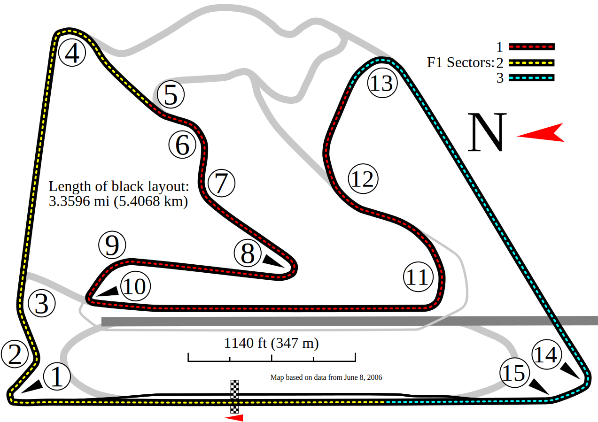

Next Race Weekend: {{returnedNextRace[0].GPName}}
Date: {{returnedNextRace[0].date}}

Data Mining Overview
Data mining is the process of knowledge discovery from a database of information. Patterns and trends are analysed from the data using concepts taken from artificial intelligence, machine learning and statistics.
For data mining to make predictions on a dataset, a statistical model is created that “reflects the important aspects of the object of study with some degree of realism”. The model therefore creates a prediction by exploring the relationship between the explanatory variables (input variables) and the relevant response variable (the predictor/outcome variable).
This web application will utilise data minining techniques to predict the outcome of Formula 1 race results using data from race weekends covering the last four years. This dataset will be used to train the model, so that it can learn the trends over the last 4 years, and can then use these trends to attempt to predict a given race. A user can select to predict any race within the last four years.
Hello, my name is Eoin Farrell and thank you for visiting my website. This website has been developed in conjunction with my final year project dissertation in computer science, DIT. The backend framework has been developed in Java while running on the Google App Engine servers. Other technologies I have used while developing this project are Greensock (a javascript animation library) and GSON (a Google implementation for interacting with JSON data in Java).
This website has only been tested to work on chrome with javascript enabled.
When you first load this website it may need a second or two to fully load so that it can pull the above race data and other data from the websites servers.
This is a single page website, so the back and forward button of your browser will not work. Also if you refresh the page you will be returned to the home page.
Red Bull 2014 rules video
Hamilton wins in Malaysia
Lewis Hamilton won his first race of the season at the Malaysian GP on Sunday, gaining an early lead and quickly creating a gap between him and his team mate rosberg behind.
Members Leaderboard Roundup
And the leader after the first week is petuki with a massive 20 points, managing to correctly predict 4th place for Alonso and only one place off for Button and Gutierrez. Also racking up points was Erica, who was only one place off with both Vettel and Rosberg. Congrats to all for entering, with the first week now behind us, how will things shape up after week 2.
A revision of the system may be in order in the future, due to the low points achieved in the first round
Dataset Overview
For this Formula 1 prediction, a user can chose between the following five explanatory variables:
3rd Previous Race (PR3)
2rd Previous Race (PR2)
1rd Previous Race (PR1)
Free Practice 3 Result (FP3)
Start Position (StartPos)
These explanatory variables were chosen due to their correlation with the race result. This correlation was derived using Pearson's product-momnet correlation, which can be seen on the next page after a prediction has been run.
Linear Regression Overview
For this application, linear regression has been chosen as the data mining prediction algorithm, to predict race results.Linear Regression can be thought of as selecting the best fitting line that can be drawn through the data points.This line of best fit attempts to reach as many of the data points as possible, or if not, to get as close to the majority of data points as possible. From this understanding we can say the line of best is the average relationship between the explanatory variables and the response variable, with some variation around it due to error
When only one explanatory variable, such as the drivers previous race result, is uesd to predict the finish of the race, the algorithm for linear regression is: Y’ = B0 + B1x + e. This formula states that the predicted race finish Y is equal to the point at which the line of best fit crosses the Y axis on a scatter plot/the intercept (B0) plus the slope of the line multiplyed by the drivers previous race result + an error rating. As linear regression attempts to find the line of best fit between all data points it is assumed, that the error value averages to 0.
For two explanatory variables, such as free practice 3 result & drivers previous race the formula expands to Y’ = B0 + B1x + B2x + e
Prediction Results
Driver
PR3
PR2
PR1
FP3
Start
Predicted
Ranked Predicted
Actual Finish
{{data.DriverName}}
{{data.PredictedFinishPos}}
{{data.PredictedFinishPosRanked}}
{{data.ActualFinishPos}}
Search Results
Driver Name: {{DriverSearch.FirstName}} {{DriverSearch.MiddleName}} {{DriverSearch.LastName}} Date of Birth: {{DriverSearch.DateofBirth}} Home Country: {{DriverSearch.HomeCountry}} Region: {{DriverSearch.Region}} Height: {{DriverSearch.Height}}cm Weight: {{DriverSearch.Weight}}kg World Championships: {{DriverSearch.SeasonWins}} Race Starts: {{DriverSearch.RaceStarts}} Podiums: {{DriverSearch.Podiums}} Pole Positions: {{DriverSearch.PolePositions}} Laps Raced: {{DriverSearch.LapsRaced}} Laps Led: {{DriverSearch.LapsLed}}
Track Name:{{TrackSearch.CircuitName}} First Race: {{TrackSearch.FirstYear}} Last Race: {{TrackSearch.LastYear}} Region: {{TrackSearch.Region}} Country: {{TrackSearch.Country}} Grands Prix Held: {{TrackSearch.GrandsPrixHeld}} Length: {{TrackSearch.TrackLength}}km Turns: {{TrackSearch.Turns}} Lap Record: {{TrackSearch.LapRecord}} Lap Record Holder: {{TrackSearch.LapRecordHolder}} Description: {{TrackSearch.Description}}
This is the user tutorial stage
Member Race Prediction
On F1Prediction.appspot.com ,members can compete against one another in their attempts to predict the next Formula 1 race. These predictions are tracked throughout the season, as users gain points for correct race predictions and are ranked in middle table of this page.
To take part simply login to F1Prediction.appspot.com with your Google account and then enter your prediction for the {{returnedNextRace[0].GPName}} before the {{returnedNextRace[0].date}} within the table on the right side of this page.
When you have finished picking your prediction hit the button below and your prediction will be uploaded to our server, so you can compete with friends and colleagues.
Your prediction will be stored so you can come back and change it at any time.
Driver results are taken from FIA classification sheets, as such any driver who does not finish, will be given the position in which he crashed, eg 3rd car to crash will be placed in 20.
10 Points = Correct Position
5 Points = 1 Place Off
5 Bonus Points = Predict Winner
User Prediction Results
Feature1
Feature2
Feature3
Feature4
Predicted
Ranked Predicted
{{data.PreviousRace3}}
{{data.PreviousRace2}}
{{data.PreviousRace1}}
{{data.FP3Rank}}
{{data.PredictedFinishPos}}
{{data.PredictedFinishPosRanked}}
Change Track Information
Track Name: {{TrackUpdate.CircuitName}} First Race: Region: Country: Grands Prix Held: Length:Km Turns: Lap Record: Lap Record Holder: Description:
F1Prediction
Sports science is a new and expanding field of research in many competitive sports and many teams are now choosing to utilise data mining techniques to improve different aspects of their game such as training, coaching, and selection of players as well as prediction. This project will create a web application hosted on Google App Engine and using the available Google toolkits and APIs. It will utilise linear regression to predict the outcome of Formula 1 race results using data from race weekends including practice, qualifying and race data covering the last four years. As there is no readily available F1 dataset, the dataset will be created from data available from the F1 governing body website along with data stored by Forix, a data collection website for motor racing. The data is collected, cleansed, sorted and analysed using Excel and visual basic coding before been uploaded to Google cloud storage, where it can be accessed by the web application. Time permitting and following the successful development of the prediction algorithm the web application will be developed to act as an eLearning tool. In this regard the Formula 1 prediction will become an example set on how data mining techniques can be used to generate relevant results. It will teach users with little to no data mining knowledge how the prediction is created by display subsets of the data along with an explanation of linear regression and how it can be used outside of F1.
On the next page is the race prediction model. On this page you are presented with three new columns.
In the first column, you may select which race you wish to predict. To do this you must select what season the race you wish to predict occured and you must then select the track. After you have decided this, you must next select which explanatory variables you wish to use (try selecting them all to begin). When you completed this you can then select the run prediction button, and the model for that selection will be created in the background, and you will see its results in the middle column.
When you run the prediciton your results will be displayed in the middle column, along with all the information of the explanatory variables for each driver. The drivers are in order of their ranked predicted finish and if it is a historic race you are predicting their actual finish will be displayed to.
If you feel that one of the drivers, should have had a better start position in the race, or their previous race was not up to scratch, you may chnage thier results. This will update the results of the other drivers, and when you are happy with your new explanatory features, in the first column you may select the button to update the race prediciton. Which will re-run the race prediction, but using the explanatory varialbes that you have decided upon.
In the third column is the driver championship table. This table displays the state of drivers championship, if the prediction came through. You may change the predicted finish of drivers and when you are done, in the first column again, hit the update championship table button, and the new championship table will be displayed with the race predicitons you have selected.